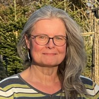

Über mich
Von der Tierarztpraxis in den Garten
Wie aus einer Kindheit voller Gartenerde, Wiese und Streuobst ein Lebensweg wurde.
(folgt)
Aufgewachsen bin ich auf dem Land, in einem alten Fachwerkhaus mit einem großen Garten — Wiese, Gemüse- und Obstgarten inklusive. Hinter unserem Haus lagen Friedhof und Kindergarten, nebeneinander. Auf dem Friedhof gab es viele Hecken und alte Bäume; man ging über ihn hindurch, wenn man in die Felder und zum Wald dahinter wollte.
Ich war viel draußen und habe gegärtnert, seit ich ein Gartenschäufelchen halten konnte — da hatte ich schon mein eigenes kleines Beet. Vieles fand ich interessant. Es fiel mir schwer, mich später in der Schule auf einen Weg festzulegen: Es gibt so viel Spannendes, Lernenswertes, Bewegendes.
Ich wollte Menschen und Tieren helfen, mit Kopf und Händen arbeiten — und bin Tierärztin geworden.
Der Wendepunkt
Im Lauf der Zeit wurde mir klar, wie oft Tiere krank werden, weil sie unnatürlich leben. Täglich werden Natur, wilde Tiere und Pflanzen weniger. Schritt für Schritt änderte ich meinen Fokus: Kaninchenernährung aus dem Garten, das Kita-Grundstück als Lebensraum für Vögel, naturnahe Schul- und Betriebsgelände.
Mit Rat und Tat stand ich meinen Kundinnen und Kunden zur Seite, und alles lief gut. Doch etwas fehlte noch. Im Gespräch mit einer Kundin verstand ich: Menschen müssen erst mit Irrglauben aufräumen — „giftfrei gärtnern ist unmöglich“, „am Wochenende muss der Rasen gemäht sein“ — bevor sie Lebensräume für Tiere, Pflanzen und sich selbst schaffen können.
(folgt)
Heute
Ein Konzept, das Wissen in die Tat bringt
Seitdem habe ich ein Konzept entwickelt, in dem ich
- Fachwissen verständlich aufbereite und zur Verfügung stelle,
- die praktische Umsetzung anleite und
- Menschen helfe, ihren Platz im sich stetig erneuernden Kreislauf der Natur zu finden — damit sie aus vollem Herzen ans Werk gehen können.
Mit meinem Programm ermögliche ich es dir, dein Stückchen Erde lebendig zu machen und dabei Ruhe, Freude und Verbundenheit zu erleben. Werde Teil des Netzwerkes von lebendigen Gärten, Balkonen und Freiflächen.
Melde dich bei mirMission accomplished: wenn all die kleinen und großen Biotope, die Menschen schaffen, zusammenfließen zu einem großen Lebensraum für alle Wesen.Sabine Schröder-Gravendyck